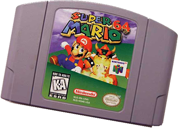
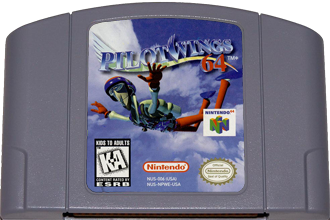
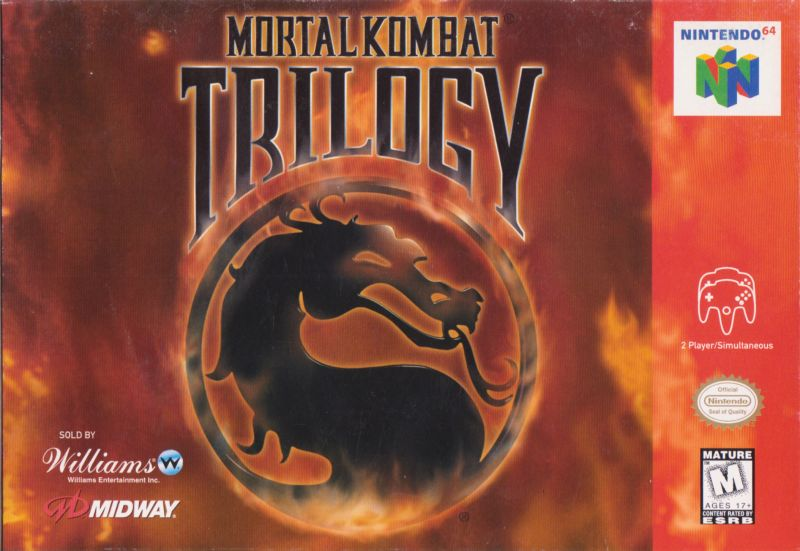
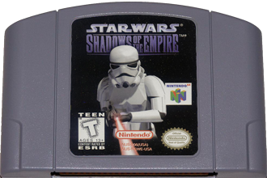
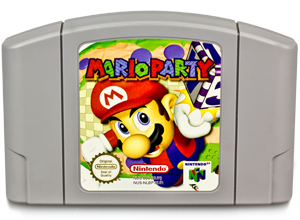

The Invention of the Nintendo 64
Launch Titles
| Game Title | Game Itself |
|---|---|
| Super Mario 64 |  Released on September 29h 1996 |
| Pilotwings 64 |  Released on September 29th 1996 |
Mortal Kombat Trilogy |  Midway Released it for the N64 on October 31 1996 |
| Star Wars: Shadows Of The Empire |  Released on December 3rd 1996 |
| Mario Party |  Released on Feburary 8th 1999 |